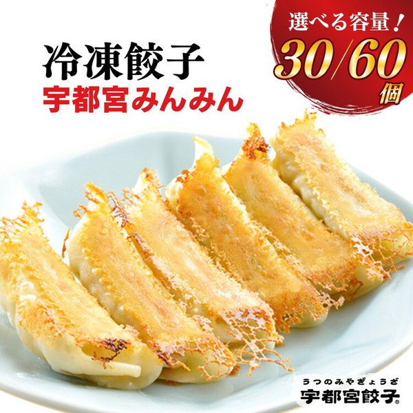
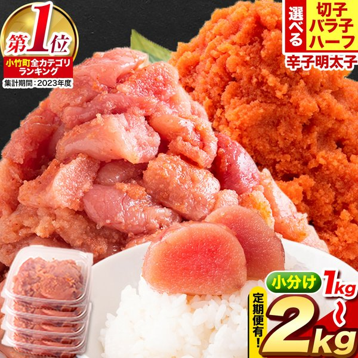
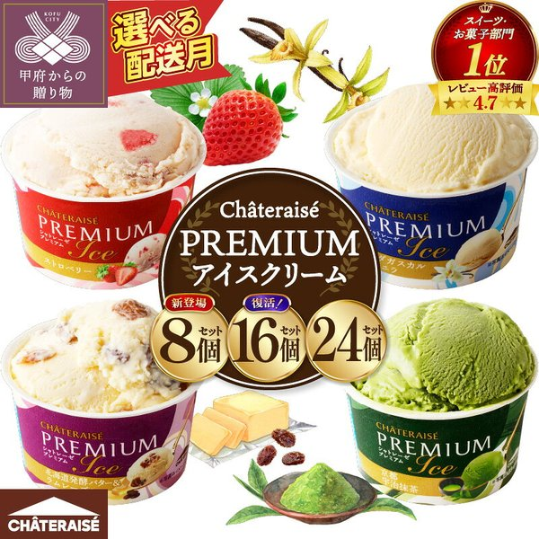
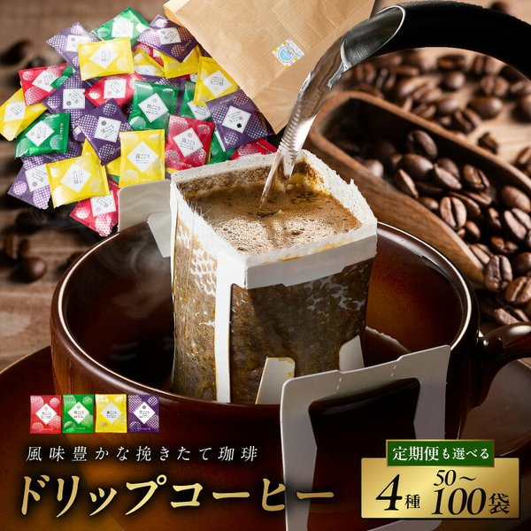
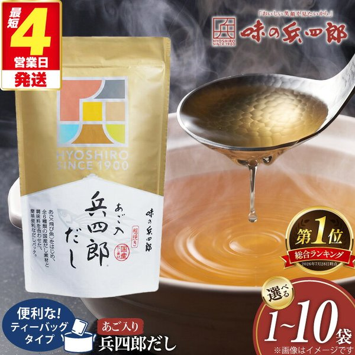
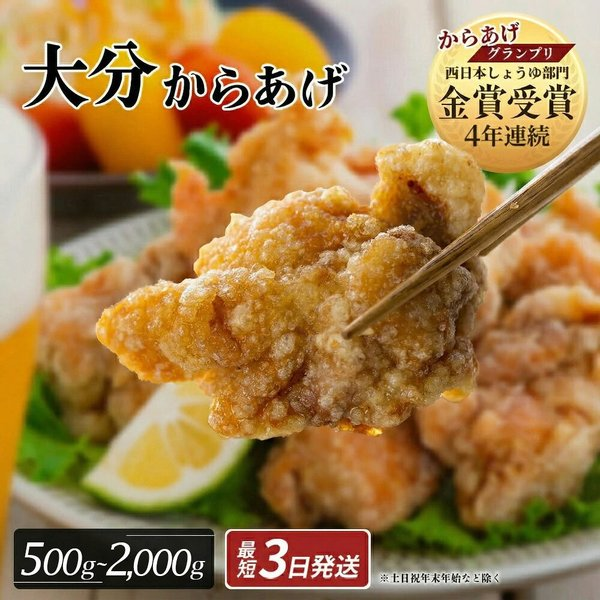
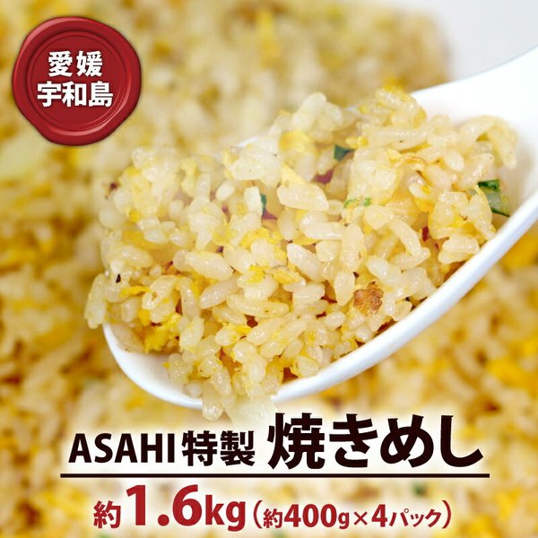
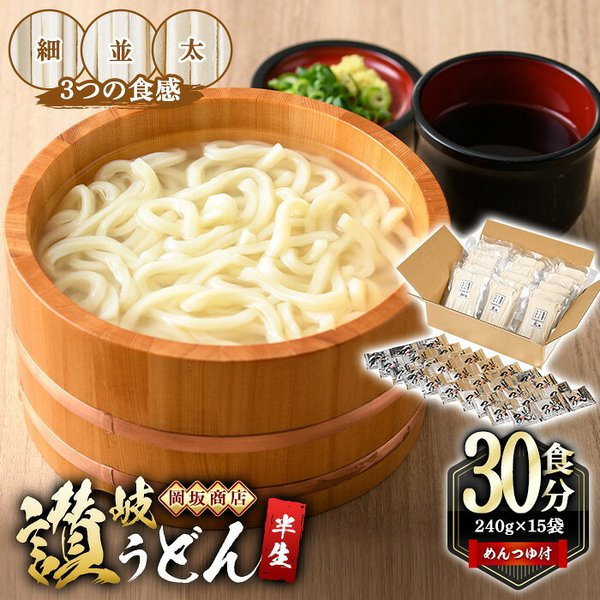
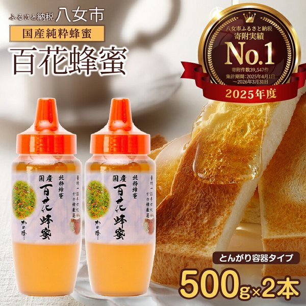
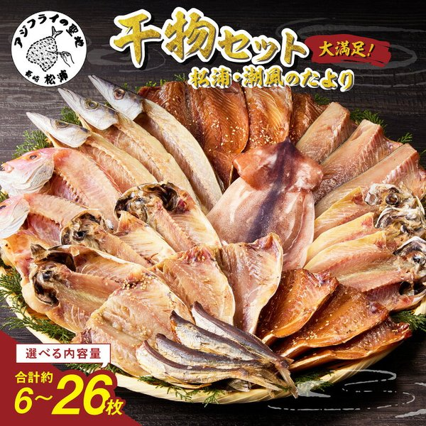

【2026年ふるさと納税】上限調整・1万円以下〜1万円台の高コスパ返礼品おすすめ10選（冷凍餃子・明太子・アイス・ドリップコーヒー・調味料など）
ふるさと納税は、寄附の上限に合わせて金額を刻むのが難しい制度です。上限を超えると控除されないため、最後の1件は「1万円以下」で調整できる返礼品が便利です。
選ぶ軸は、寄附額が1万円以下か、日常で消費する食品か、そして冷凍庫に収まる量かです。冷凍餃子や明太子、冷凍焼きめしは1食ずつ使い切れて、買い物の回数を減らせます。アイスやドリップコーヒーは、スーパーで買うと同じ商品が箱で届くため、単価の比較がしやすい返礼品です。調味料やだしパックは日持ちするので、寄附の時期を気にせず使えます。返礼品は寄附額の3割以下が目安と決まっているので、同じ寄附額なら容量と送料込みの総額で比べるのが確実です。自己負担は2,000円で、申し込みは自治体ごとに必要になります。
本記事では、楽天市場で人気・高評価の1万円以下〜1万円台の返礼品10選を、寄附額とレビュー評価つきで写真付き紹介します。
- おすすめ10選 スペック・特徴比較表
- BEST 1｜宇都宮餃子 宇都宮みんみん 冷凍餃子（内容量が選べる）
- BEST 2｜辛子明太子 バラ子・切子 選べる内容量（最大2kg・定期便可）
- BEST 3｜シャトレーゼ アイス 詰め合わせ（個数・発送月が選べる）
- BEST 4｜ドリップコーヒー 本格 詰め合わせ 50袋／100袋（定期便も可）
- BEST 5｜あご入兵四郎だし だしパック（1〜10袋から選べる）
- BEST 6｜大分 からあげ 骨なし もも・むね 500g〜2kg（選べる数量）
- BEST 7｜愛媛県宇和島市 冷凍焼きめし 1.6kg（400g×4パック）
- BEST 8｜本場讃岐うどん 細麺・並麺・太麺 食べ比べ30食分（めんつゆ付）
- BEST 9｜かの蜂 国産 百花蜂蜜 1kg（500g×2本・非加熱）
- BEST 10｜干物セット 6〜26枚（アジ・サバ・カマス・イカなど）
- 【読者負担0円】買わなくても得する無料サービス
- まとめ：1万円以下〜1万円台の返礼品10選の選び方
| 順位 | 商品名 | ブランド | 最大の特徴・おすすめ理由 | 総合評価 |
|---|---|---|---|---|
| BEST 1 | 宇都宮餃子 宇都宮みんみん 冷凍餃子（内容量が選べる） | 宇都宮みんみん（栃木県宇都宮市） | 宇都宮の有名店の味を冷凍で | 4.61 |
| BEST 2 | 辛子明太子 バラ子・切子 選べる内容量（最大2kg・定期便可） | 辛子明太子 専門店 | バラ子・切子を選べる | 4.80 |
| BEST 3 | シャトレーゼ アイス 詰め合わせ（個数・発送月が選べる） | シャトレーゼ（山梨県甲府市） | 個数と発送月を選べる | 4.75 |
| BEST 4 | ドリップコーヒー 本格 詰め合わせ 50袋／100袋（定期便も可） | コーヒー 専門店 | 浅煎り〜深煎りの味から選べる | 4.73 |
| BEST 5 | あご入兵四郎だし だしパック（1〜10袋から選べる） | 味の兵四郎（福岡県筑紫野市） | 焼きあご入りのだしパック | 4.85 |
| BEST 6 | 大分 からあげ 骨なし もも・むね 500g〜2kg（選べる数量） | 大分からあげ（大分県豊後高田市） | 骨なしで食べやすい | 4.75 |
| BEST 7 | 愛媛県宇和島市 冷凍焼きめし 1.6kg（400g×4パック） | 愛媛県宇和島市 | 400g×4パックの小分け | 4.78 |
| BEST 8 | 本場讃岐うどん 細麺・並麺・太麺 食べ比べ30食分（めんつゆ付） | 讃岐うどん 3種食べ比べ（香川県まんのう町） | 細麺・並麺・太麺の3種 | 4.71 |
| BEST 9 | かの蜂 国産 百花蜂蜜 1kg（500g×2本・非加熱） | かの蜂（国産百花蜂蜜） | 国産・非加熱の百花蜂蜜 | 4.82 |
| BEST 10 | 干物セット 6〜26枚（アジ・サバ・カマス・イカなど） | 松浦・潮風のたより（長崎県松浦市） | 6枚〜26枚から選べる | 4.50 |
宇都宮餃子 宇都宮みんみん 冷凍餃子（内容量が選べる）

宇都宮の餃子専門店・みんみんの焼き餃子を冷凍で届ける返礼品。野菜の甘みが先に来て、にんにくは控えめなので、夜遅い帰宅でも匂いを気にせず食べられます。内容量を選べるので、まずは食べきれる数を試してから増やせます。焼くときは油をひかずに並べ、焼き色が付いたら水を差して蒸らすだけ。1袋を冷凍庫に入れておけば、疲れて料理をする気力がない日の主食になります。寄附額は約8,000円（2026年11月時点）。
- 宇都宮の有名店の味を冷凍で
- 内容量を選べる
- レビュー223件・評価4.61
- にんにくは控えめだが、翌朝まで香りが残る人はいる
辛子明太子 バラ子・切子 選べる内容量（最大2kg・定期便可）

粒のままのバラ子と切子を選べる明太子の返礼品。最大2kgまであり、定期便にすれば1回あたりの量を抑えながら切らさずに済みます。切子は見た目が不揃いなぶん、ご飯にのせても混ぜても使えるので、忙しい日の朝はこれ1つで主食が完成します。小分けの袋なら、使う分だけ解凍できるので、冷凍庫のなかで場所を取りません。寄附額は約9,000円（2026年11月時点）。
- バラ子・切子を選べる
- 最大2kg・定期便も選べる
- レビュー3,503件・評価4.80
- 冷凍庫に2kg分の空きがあるか、先に確認しておく
シャトレーゼ アイス 詰め合わせ（個数・発送月が選べる）

シャトレーゼのアイスを詰め合わせで届ける返礼品。バニラなどの定番に加えて、季節のフレーバーが混ざる回もあり、個数と発送月を選べます。スーパーで買うと同じ商品でも、箱で届くと冷凍庫に常備がある状態になり、休日の食後や来客時に迷わず出せます。個包装なので、食べたい分だけ取り出せます。寄附額は約6,000円（2026年11月時点）。
- 個数と発送月を選べる
- 定番フレーバーの詰め合わせ
- レビュー488件・評価4.75
- 夏の発送を選ぶと、受け取り当日に冷凍庫の場所を空けておく必要がある
ドリップコーヒー 本格 詰め合わせ 50袋／100袋（定期便も可）

アラビカ種を使ったドリップバッグの返礼品。深煎り・中深煎り・中煎りから選べ、50袋と100袋、定期便まで用意されています。1袋ずつ個包装なので、朝の1杯を淹れるのに器具を洗う必要がありません。100袋なら1日1杯で3ヶ月ほどもち、インスタントを買い足す回数が減ります。寄附額は約9,000円（2026年11月時点）。
- 浅煎り〜深煎りの味から選べる
- 50袋・100袋・定期便に対応
- レビュー1,244件・評価4.73
- 袋のままでは香りが落ちるので、開封後は密閉容器に移す
あご入兵四郎だし だしパック（1〜10袋から選べる）

焼きあごを効かせただしパックの返礼品。1袋から10袋まで選べ、1袋に30包ほど入っているので、日常使いの味噌汁や煮物にそのまま使えます。顆粒だしと違って袋のまま煮出せるため、味がぼやけず、料理の塩分も足しやすいです。10袋を選ぶと1年近くもち、買い足しの手間が減ります。寄附額は約7,000円（2026年11月時点）。
- 焼きあご入りのだしパック
- 1袋〜10袋から選べる
- レビュー193件・評価4.85
- 煮出す時間が短いと味が薄いので、5分ほどは鍋に入れておく
大分 からあげ 骨なし もも・むね 500g〜2kg（選べる数量）

大分のからあげを骨なしで届ける返礼品。ももとむねを選べ、500gから2kgまで数量を調整できます。骨なしなので、弁当に詰めるときも食べるときも手が汚れません。温めるだけで主菜になるので、共働きの平日は「あと1品」が足りないときに冷凍庫から出せば済みます。揚げ直さずレンジで温めても、衣がべたつきにくい味付けです。寄附額は約7,500円（2026年11月時点）。
- 骨なしで食べやすい
- 500g〜2kgから選べる
- レビュー351件・評価4.75
- レンジで温めすぎると衣が固くなるので、様子を見ながら温める
愛媛県宇和島市 冷凍焼きめし 1.6kg（400g×4パック）

愛媛県宇和島市の返礼品で、冷凍の焼きめし1.6kg。400gのパックが4つ入り、1パックで茶碗2杯分ほどあります。レンジで温めるだけで、具が混ざった焼きめしが食べられるので、休日の昼や残業後の夕食に向いています。パラッとした仕上がりで、卵を足せば名古屋の鉄板焼きめしのような味にもなります。寄附額は約10,000円（2026年11月時点）。
- 400g×4パックの小分け
- レンジで温めるだけ
- レビュー23件・評価4.78
- レビューは23件とまだ少なく、口コミはこれから増える段階
本場讃岐うどん 細麺・並麺・太麺 食べ比べ30食分（めんつゆ付）

香川の製麺所が、細麺・並麺・太麺の3種類を15袋（計30食分）に詰めた返礼品。めんつゆが付いているので、届いた日にゆでれば食事が完成します。同じ産地でも麺の太さで食感が変わるので、家族で好みが分かれる家でも取り合いになりません。半生麺なので、乾麺よりゆで時間が短く、平日の夜でも10分ほどで用意できます。寄附額は約13,000円（2026年11月時点）。
- 細麺・並麺・太麺の3種
- めんつゆ付きで30食分
- レビュー137件・評価4.71
- 半生麺は日持ちが短いので、届いたら早めに食べ進める
かの蜂 国産 百花蜂蜜 1kg（500g×2本・非加熱）

養蜂歴60年の養蜂場が、国産の百花蜂蜜を500gの容器2本で届ける返礼品。非加熱なので花の香りが残り、ヨーグルトにかけてもトーストに塗っても、はちみつそのものの味が分かります。とんがり容器は注ぎ口が細く、垂れにくいのが地味に便利です。1kgあると、毎朝小さじ1杯使っても1年近くもちます。寄附額は約13,000円（2026年11月時点）。
- 国産・非加熱の百花蜂蜜
- 500g×2本で1kg
- レビュー845件・評価4.82
- 結晶化することがあるので、湯せんでゆっくり戻す
干物セット 6〜26枚（アジ・サバ・カマス・イカなど）

長崎県松浦市の干物を、6枚から26枚まで選べる返礼品。アジやサバ、カマス、イカなど、その時季に脂の乗った魚が詰まります。1枚ずつ包装されているので、朝は1枚だけ出して焼けば、ご飯と味噌汁で十分な朝食になります。干物は冷凍で長く置けるため、買い物に行けない週の「主食のおかず」として頼りになります。寄附額は約5,400円（2026年11月時点）。
- 6枚〜26枚から選べる
- アジ・サバ・カマスなど魚種が豊富
- レビュー297件・評価4.50
- 塩気が強めの魚もあるので、焼く前に軽く水気を拭く
この記事の商品を買う前に、まずは無料で得する選択肢をチェック。どれも登録・利用は0円で、無料期間中に解約すれば料金はかかりません。読みたい雑誌がある人、ポイントを貯めたい人、アンケートなら気軽という人、それぞれに合うものを選べます。
初回31日無料・無料期間中に解約すれば0円 → 楽天ポイントモール｜登録無料で毎日ポイ活
買い物なしでもポイントが貯まる無料サービス → 楽天インサイト｜アンケートに答えてポイント
登録無料・すきま時間のアンケートで貯まる → 楽天カード｜年会費永年無料
新規発行・年会費ずっと0円 →
4つのサービスの違いと使い分けは「出費0円で得する！買わずにポイントが貯まる無料サービス厳選4選」でまとめています。
💡 まとめ：1万円以下〜1万円台の返礼品10選の選び方
1万円以下で調整するなら、毎日か毎週食べるものを選ぶのがいちばん損をしません。餃子や明太子、冷凍焼きめしは1食ずつ使えて、買い物の回数が減ります。アイスとコーヒーは、スーパーで買うと同じ商品が箱で届くので、単価を比較したうえで選ぶと納得できます。だしパックとはちみつは日持ちするため、寄附の時期を選ばずに使えます。寄附する前に、冷凍庫の空きと1ヶ月に食べる量を書き出しておくと、届いてから場所に困りません。上限額は税理士や自治体のシミュレーションで確認し、超えない範囲で刻んでください。
楽天市場では「5と0のつく日」や「お買い物マラソン」などのキャンペーンに合わせて購入すると、ポイント還元が最大化してお得に手に入ります。ぜひチェックしてみてくださいね。